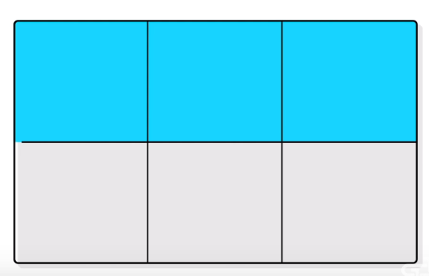
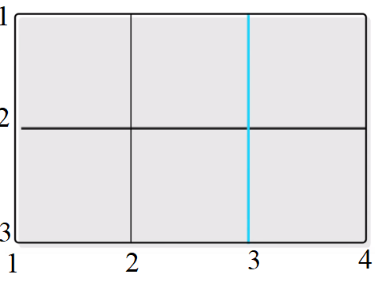

CSS GRID LAYOUT
Created by Darya Novak
Grid Container
The element on which display: grid is applied. It's the direct parent of all the grid items.

Grid Line
The dividing lines that make up the structure of the grid. Ther can be either vertical("column grid lines") or horizontal("row gridlines") and reside on either side of row or column.

Grid Cell
The space between two adjacent row and two adjacent column grid lines. It's a single "unit" of the grid. Here's the grid cell between row grid lines 1 and 2, and column grid lines 3 and 4.

Grid Area
The total space surrounded by four grid lines. A grid arey may be comprised of any number of grid cells.

display: grid
creates grid container

grid-template-rows and grid-template-columns
.container {
grid-template-columns: 40px 50px auto 50px 40px;
grid-template-rows: 25% 100px auto;
}

grid-column-gap and grid-row-gap
.container {
grid-template-columns: 100px 50px 100px;
grid-template-rows: 80px auto 80px;
grid-column-gap: 10px;
grid-row-gap: 15px;
}